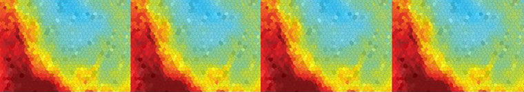

|  |
| NEWS > Press Release |
|
New Light-Emitting Biomaterial Could Improve Tumor Imaging, Study Shows Aug. 10, 2009 – A new material developed at the University of Virginia – an oxygen nanosensor that couples a light-emitting dye with a biopolymer – simplifies the imaging of oxygen-deficient regions of tumors. Such tumors are associated with increased cancer aggressiveness and are particularly difficult to treat. Oxygen nanosensors are powerful new research tools that one day may also be used for the diagnosis and detection of diseases and for planning treatment strategies. The new material is based on poly(lactic acid), a biorenewable, biodegradable polymer that is safe for the body and the environment, and is easy and inexpensive to fabricate in many forms, including films, fibers and nanoparticles. It is useful for medical research as well as environmental research, sustainable design and green products, too. The versatile sensor material is the result of research combining green chemistry with nanotechnology, and is reported in the current online edition of the journal Nature Materials. Chemists at the University of Virginia developed the material and consulted with cancer researchers at the U.Va. Cancer Center and Duke University Medical Center to determine possible applications. Guoqing Zhang, a U.Va. chemistry doctoral candidate, working with Cassandra Fraser, a U.Va. chemistry professor, synthesized the new material by combining a corn-based biopolymer with a dye that is both fluorescent and phosphorescent. The phosphorescence appears as a long-lived afterglow that is only evident under low oxygen or oxygen-free conditions. Zhang devised a method to adjust the relative intensities of short-lived blue fluorescence and long-lived yellow phosphorescence, ultimately creating a calibrated colorful glow that allows visualization of even minute levels of oxygen. The biomaterial displays its oxygen-sensitive phosphorescence at room or body temperature, making it ideal for use in tissues. "We were amazed at how easy the material was to synthesize and fabricate as films and nanoparticles, and how useful it is for measuring low oxygen concentrations," Fraser said. "It is based on a bio-friendly material," added Zhang. "It is safe for the body and the environment, and so we realized it could have applications not just for medical research and developing improved disease treatments, but also for new sustainable technologies." Cancer researchers at Duke quickly realized that the new material could be particularly useful for real-time and extended-time spatial mapping of oxygen levels in tumors. This is important because a lack of sufficient oxygen in tumors – called "hypoxia" – is a major source of resistance to radiation and chemotherapy treatment, and promotes a greater degree of malignancy. "We have found that these nanoparticles were directly applicable to our existing tumor models," said Greg Palmer, assistant professor of radiation oncology at Duke University Medical Center. "This technology will enable us to better characterize the influence of tumor hypoxia on tumor growth and treatment response." Researchers and clinicians have long sought effective ways to locate and map low-oxygen areas in the body to better understand normal and disease processes. Presently, there are no simple, easy or inexpensive methods, preclinical or clinical, for generating oxygen maps of tumors and surrounding tissues with good spatial and temporal resolution. "The method developed here holds great promise for being able to perform measurements of tumor hypoxia cost-effectively," said study co-author Mark Dewhirst, a professor of radiation oncology, pathology and biomedical engineering at Duke. "This kind of tool could greatly increase our knowledge about methods to eliminate tumor hypoxia, which could lead to more effective treatments." "Tumors that have insufficient oxygen tend to be more likely to spread from the primary site to other parts of the body," added Michael Weber, director of U.Va.'s Cancer Center. "Despite the overall importance of tumor hypoxia, it is very difficult to measure directly and most methods that are available are very expensive." The new material currently is being used in preclinical studies to gain insight into cancer biology and treatment response, which could be useful for drug development and testing. "This technology enables entirely new insights to be obtained, allowing imaging of tumor hypoxia on the scale of tumor cells and small blood vessels," Palmer said. Eventually the material could be used as an injectable nanosensor, potentially providing continual data on oxygen levels, biological processes and therapy responsiveness. Hypoxia also is linked to cardiovascular disease, stroke and diabetes, so the material developed by Zhang and Fraser could have applications in several areas of medicine. Applications for the light-emitting biomaterial beyond medicine include molecular probes for cell biology, imaging agents for visualizing fluid and aerodynamics, and oxygen sensors for food and drug packaging, tamper resistant seals, and environmental monitoring, such as measuring oxygen levels in bodies of water. The research is funded by the U.S. National Science Foundation, the U.S. Department of Defense, U.S. National Institutes of Health, the James and Rebecca Craig Foundation, through the U.Va. Cancer Center, and the U.Va. NanoSTAR Institute. # # # Contact information for the researchers involved: Cassandra Fraser Guoqing Zhang Mark Dewhirst Gregory Palmer Press contacts: Fariss Samarrai, U.Va. Mary Jane Gore, Duke University
|
|